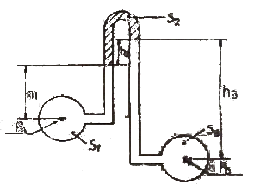
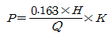
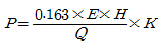
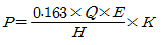
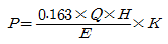

소방설비산업기사(기계) (2006-09-10 기출문제)
1과목: 소방원론
1. 콘크리트에 대한 설명 중 틀린 것은?
- 콘크리트와 강재의 열팽창률은 거의 같다.
- 콘크리트의 열전도율은 목재보다 적다.
- 콘크리트는 장시간 화재에 노출되면 강도는 저하된다.
- 콘크리트는 인장력에 대하여 매우 약하다.
(정답률: 54%)

2. 셀룰로이드 화재시 주로 이용되는 소화방법은?
- 탄산가스를 방사한다.
- 사염화탄소를 방사한다.
- 포를 방사한다.
- 대량으로 주수한다.
(정답률: 65%)
3. 물체의 열전도와 관계가 가장 먼 요소는?
- 온도
- 비열
- 질량
- 열전도율
(정답률: 48%)
4. 연소의 3요소는 가연물, 산소공급원, 점화원이다. 다음 중 산소공급원이 아닌 것은?
- 염소산칼륨
- 과산화나트륨
- 질산나트륨
- 네온
(정답률: 79%)
5. 불티가 바람에 날리거나 또는 화재 현장에서 상승하는 열기류 중심에 휩쓸려 원거리 가연물에 착화하는 현상을 무엇이라 하는가?
- 비화
- 전도
- 대류
- 복사
(정답률: 84%)
6. 화재시의 열의 전달에 관한 설명으로 틀린 것은?
- 가연물에 열이 전달되어 착화하는 현상은 전도와 대류 및 복사의 현상에 의한 것이다.
- 복사열이 가연물에 흡수되어 그 표면온도가 발화점에 도달하게 되면 연소하기 시작한다.
- 공기의 열전도율은 5kcal/m.hr.℃ 이다.
- 바람에 의하여 고온기체가 인접 가연물로 날아가게 되면 이를 가열 및 발화시킨다.
(정답률: 95%)
7. 위험물의 류별 성질에 관한 설명이 잘못된 것은?
- 1류 위험물 : 환원성이며 충격, 마찰에 약하다.
- 3류 위험물 : 금수성, 자연발화성 물질이다.
- 4류 위험물 : 인화성 증기를 발생하는 액체이다.
- 6류 위험물 : 산화성, 부식성이 있다.
(정답률: 74%)
8. 건물화재의 착화를 방지하기 위한 불연재료의 이용방식으로 틀린 것은?
- 불연재료를 사용할 부분은 천정면과 벽의 상부 등이 있다.
- 불연재료에는 할로겐화합물, 유지류를 반드시 도포하여야 한다.
- 복도 및 계단부분은 불연재료로 사용한다.
- 지하층에 설치되는 공공시설의 거실부분은 가급적 불연재료를 사용하여야 한다.
(정답률: 72%)
9. 액체위험물의 연소범위에 대하 설명으로 틀린 것은?
- 연소범위는 상한치와 하한치가 있다.
- 연소범위는 하한치는 그 물질의 인화점에서의 증기 농도에 해당한다.
- 연소범위가 좁을수록 폭발의 위험이 있다.
- 연소범위가 클수록 위험하다.
(정답률: 82%)
10. 산소와 화합하지 않는 원소는?
- Fe
- Ar
- Cu
- P
(정답률: 78%)
11. 공기의 유통구가 생기면 연소 속도는 급격히 진행되어 실내는 순간적으로 화염이 가즉하게 된다. 이 때는 어느 시기인가?
- 초기
- 성장기
- 종기
- 소화완료
(정답률: 74%)
12. 건축물의 방화계획에서 공간적 대응에 해당하지 않는 것은?
- 특별피난계단
- 옥내소화전설비
- 직통계단
- 방화구획
(정답률: 55%)
13. 다음 중 분진폭발을 일으키지 않는 물질은?
- 시멘트
- Al
- 석탄
- Mg
(정답률: 71%)
14. 다음 위험물 중에서 물을 사용하여 소화하면 더 위험해지는 것은?
- 피크린산
- 질산암모늄
- 알루미늄분
- 질화면
(정답률: 42%)
15. 분말 소화약제 중 제3종 분말의 열분해 반응시 발생되는 생성물이 아닌 것은?
- NH3
- HPO3
- CO2
- P2O5
(정답률: 66%)
16. 전기실이나 통신실 등의 소화설비에 적합한 것은?
- 스프링클러설비
- 옥내소화전설비
- 포소화설비
- CO2 소화설비
(정답률: 48%)
17. 다음 중 제3류 위험물인 금수성 물질은?
- 염소산염류
- 적린
- 탄화칼슘
- 유기과산화물
(정답률: 53%)
18. 가연물질이 재로 덮인 숯불 모양으로 불꽃 없이 연소하는 것을 나타내고 있는 것은?
- 발염연소
- 무염연소
- 맹화
- 진화
(정답률: 79%)
19. CO2 소화기가 갖는 주된 소화 효과는?
- 냉각소화
- 질식소화
- 연료제거소화
- 연쇄반응차단소화
(정답률: 91%)
20. 인화성, 가연성 물질의 취급장소에 대한 화재와 폭발의 방지방법이 아닌 것은?
- 발화원을 없앤다.
- 취급장소 주위의 공기 대신 불활성 기체로 바꾼다.
- 밀폐된 용기 내에 보관한다.
- 환기시설을 하지 않는다.
(정답률: 55%)
2과목: 소방유체역학
21. 다음 물질 중 소화약제하고 할 수 없는 것은?
- 이산화탄소
- 일산화탄소
- 물
- 아르곤
(정답률: 55%)
22. 안지름이 30cm 이고, 길이가 800m인 관로를 통하여 300L/s의 물을 50m 높이까지 양수하는데 있어 펌프에 필요한 동력은 몇 kW인가? (단, 관마찰계수는 0.03이고, 펌프의 효율은 85%이다.)
- 402
- 409
- 415
- 428
(정답률: 16%)
23. 파이프 속을 흐르는 유체의 압력을 측정하기 위한 계기가 아닌 것은?
- 부르돈 압력계
- 마노미터(manometer)
- 위어(wier)
- 피에조미터(piezometer)
(정답률: 50%)
24. 비중이 0.88인 벤젠에 내경 1mm의 유리관을 세웠더니 벤젠이 유리관을 따라 9.8mm를 올라갔다. 유리와의 접촉 각이 0°라 하면 벤젠의 표면장력은 몇 N/m 인가?
- 0.021
- 0.042
- 0.084
- 0.128
(정답률: 48%)
25. 냉각 소화시 소화약제로 물을 사용하는 것은 물의 어떤 성질을 이용한 것인가?
- 증발잠열
- 융해열
- 응고열
- 응축열
(정답률: 80%)
26. 물 10kg을 20℃에서 50℃까지 데우기 위해 3kW의 전기온수기를 사용하고 있다. 열손실이 없을 때 물에 전달? 열량과 물을 데우는 데 걸리는 시간은? (단, 물의 비열은 4.2kJ/(kgㆍK)이다.)
- 126kJ, 42 sec
- 1260kJ, 42 sec
- 1260kJ, 420 sec
- 126kJ, 420 sec
(정답률: 44%)
27. 유체의 점성에 관한 법칙으로 Newton의 점성법칙과 관계가 없는 것은?
- 점성계수
- 유체밀도
- 전단응력
- 속도구배
(정답률: 50%)
28. 수격작용(water hammering)의 방지법이 아닌 것은?
- 관의 유속을 낮게 한다.
- 조압 수조(surge tank)를 관선에 설치한다.
- 밸브는 펌프 송출구 가까이 설치한다.
- 관이 직경을 작게 한다.
(정답률: 40%)
29. 그림에서 각 높이는 h1=60cm, h2=30cm, h3=120cm이고, 각각의 비중은 S1=1, S2=0.65, S3=0.8 일 때 PB-PA의 압력차를 물의 수두로 표시하면 몇 m인가?

- 0.555
- 0.750
- 0.165
- 1.65
(정답률: 60%)
30. 열분해시 독성가스인 포스겐(phosgene) 가스나 염화수소가스를 발생시키는 할로겐 화합물 소화약제는?
- Halon 2402
- Halon 1211
- Halon 1301
- Halon 104
(정답률: 55%)
31. 길이 L인 곧은 원관에서 유량 Q와 마찰계수 f의 값이 일정하면 마찰에 의한 손실 수두는 관의 안지름 d와는 어떤 관계가 있는가?
- 2승에 비례한다.
- 3승에 반비례한다.
- 5승에 비례한다.
- 5승에 반비례한다.
(정답률: 34%)
32. 점도계 중 스토크스의 법칙을 기초로한 점도계는?
- 세이볼트 점도계
- 오스텐빌트 점도계
- 낙구식 점도계
- 회전식 점도계
(정답률: 53%)
33. 지름이 20mm인 원관에 어떤 액체가 흐르고 있다. 이 때 레이놀즈수가 1800 이고 수두손실이 200m 당 10m 이었다. 유량은 몇 cm3/s 인가?
- 232
- 328
- 442
- 531
(정답률: 22%)
34. 500℃와 20℃의 두열원 사이에 설치되는 열기관이 가질 수 있는 최대의 이론 열효율은 약 몇 % 인가?
- 48%
- 585
- 62%
- 96%
(정답률: 53%)
35. 다음에서 레이놀즈수를 표현한 것 중 옳은 것은?
- 관성력/점성력
- 중력/탄성력
- 관성력/중력
- 관성력/인장력
(정답률: 94%)
36. 옥내소화전 설비에서 노즐구경이 같은 노즐에서 압력을 9배로 하면 방수량은 몇 배로 되는가?
- √3
- 2
- 3
- 9
(정답률: 89%)
37. 온도계의 원리를 가장 잘 나타내 주는 열역학 법칙은?
- 열역학 제0법칙
- 열역학 제1법칙
- 열역학 제2법칙
- 열역학 제3법칙
(정답률: 32%)
38. 상온 상압에서 액체 상태인 할로겐화합물 소화약제는?
- 할론 2402
- 할론 1301
- 할론 1211
- 할론 1400
(정답률: 41%)
39. 직경 65mm의 관 내를 유량 240 L/min로 물이 흘러간다면 평균 유속은 몇 m/s 인가?
- 1.2
- 2.4
- 3.6
- 4.8
(정답률: 41%)
40. 흐르는 유체에 대한 연속 방정식이란 어떤 이론과 관련된 법칙인가?
- 질량보존의 법칙
- 에너지보존의 법칙
- 관성의 법칙
- 뉴턴의 운동 제2법칙
(정답률: 62%)
3과목: 소방관계법규
41. 소방대상물에 대한 소방검사 항목으로 옳지 않은 것은?
- 위험물안전관리자의 업무에 관한 사항
- 특정소방대상물의 관계인의 피난시설 및 방화시설의 유지ㆍ관리에 관한 사항
- 공동방화관리자로 선임된 자의 방화관리업무 수행에 관한 사항
- 특정소방대상물의 관계인ㆍ관리업자 또는 기술자격자가 소방시설 등에 대하여 실시한 자체점검 등에 관한 사항
(정답률: 37%)
42. 소방기본법의 목적에 속하지 않는 것은?
- 사회의 정의 실현
- 국민의 생명ㆍ신체 및 재산보호
- 공공의 안녕질서 유지와 복리증진
- 위급한 상황에서의 구조ㆍ구급활동
(정답률: 75%)
43. 위험물 간이저장탱크에 대한 설명으로 맞는 것은?
- 통기관은 지름 최소 40mm 이상으로 한다.
- 용량은 600ℓ 이하 이어야 한다.
- 탱크의 주위에 너비는 최소 1.5m 이상의 공지를 두어야 한다.
- 수압시험은 50kPa의 압력으로 10분간 실시하여 새거나 변형되지 아니하여야 한다.
(정답률: 37%)
44. 다음 중 한국소방검정공사의 업무와 관계가 가장 먼 것은?
- 소방용기계⦀기구에 대한 검사기술의 조사ㆍ연구
- 소방시설 및 위험물안전에 관한 조사ㆍ연구 및 기술 지원
- 소방시설 및 위험물안전관리에 관한 자료ㆍ정보의 수집 출판ㆍ기술강습 및 홍보
- 소방기술과 안전관리에 관한 교육 및 조사ㆍ연구
(정답률: 20%)
45. 다음 중 하자보수보증 기간이 3년이 아닌 것은?
- 자동식 소화기
- 간이스프링클러설비
- 무선통신 보조설비
- 자동화재탐지설비
(정답률: 60%)
46. 제1류 위험물에 해당하는 것은?
- 칼륨
- 질산에스테르류
- 염소산염류
- 유기과산화물
(정답률: 83%)
47. 화재경계지구의 지정대상지역에 해당하지 않는 것은?
- 시장 지역
- 공자ㆍ창고가 밀집한 지역
- 특정소발대상물이 밀집한 지역
- 위험물의 저장 및 처리시설이 밀집한 지역
(정답률: 53%)
48. 소방시설설치유지 및 안전관리에 관한 법률상의 특정소방대상물 중 오피스텔은 어디에 속하는가?
- 병원시설
- 업무시설
- 공동주택
- 근린생활시설
(정답률: 48%)
49. 소방용수시설에 대한 설명 중 옳은 것은?
- 시ㆍ도지사는 소방용수시설을 설치하고 유지ㆍ관리하여야 할 것
- 주거지역ㆍ상업지역 및 공업지역에 설치하는 경우에는 소방대상물과의 수평거리를 140m 이하가 되도록 할 것
- 저수조는 지면으로부터의 낙차가 4.5m이상 일 것
- 흡수관의 투입구가 사각형의 경우에는 한 변의 길이가 30cm 이상 일 것
(정답률: 15%)
50. 소화활동설비에 해당하지 않는 것은?
- 제연설비
- 비상콘센트설비
- 연결송수관설비
- 자동화재속보설비
(정답률: 47%)
51. 방염대상물품에 대하여 방염처리업을 하고자 하는 자는 누구에게 등록을 해야 하는가?
- 소방방재청장
- 시ㆍ도지사
- 대통령
- 소방본부장ㆍ소방서장
(정답률: 56%)
52. 방염업의 등록 결격사유에 해당하지 않는 것은?
- 금치신자
- 방염업의 등록이 취소된 날로부터 3년이 지난 자
- 위험물안전관리법에 다른 금고 이상의 형의 집형유예선고를 받고 그 유예기간 중에 있는 자
- 위험물안전관리법에 다른 금고 이상의 실형의 선고를 받고 그 집행이 종료되거나 집행이 면제된 날로부터 2년이 지나지 아니한 자
(정답률: 50%)
53. 특정소방대상물의 방화관리자의 업무가 아닌 것은?
- 소방시설 그 밖의 소방관련시설의 유지ㆍ관리
- 자체소방대의 조직
- 피난시설 및 방화시설의 유지ㆍ관리
- 화기 취급의 감독
(정답률: 64%)
54. 다음 중 소방신호에 속하지 않는 것은?
- 경계신호
- 발화신호
- 경보신호
- 훈련신호
(정답률: 67%)
55. 다음 중 1급 방화관리대상물의 선임대상자로 부적합한 자는?
- 소방공무원으로 5년 이상의 경력을 갖고 있는 자
- 산업안전기사 자격을 가진 자로 1년 이상 방화관리에 관한 실무경력이 있는 자
- 2급 방화관리대상물의 방화관리에 관한 실무경력이 5년이상 경과한자 중 소방방재청장이 실시하는 1급방화관리대상물의 방화관리에 관한 시험에 합격한 자
- 소방설비산업기사 자격을 가진 자
(정답률: 31%)
56. 물분무소화설비를 설치하여야 하는 차고ㆍ주차장에 어느 설비를 화재안전기준에 적합하게 설치한 경우 물분무등소화설비를 면제한느가?
- 옥내소화전설비
- 스프링클러설비
- 간이스프링클러설비
- 청정소화약제소화설비
(정답률: 58%)
57. 소방대원의 소방교육ㆍ훈련의 회수 및 기간으로 올바른 것은?
- 1년마다 1회이상, 2주 이상
- 2년마다 1회이상, 2주 이상
- 3년마다 1회이상, 2주 이상
- 3년마다 1회이상, 4주 이상
(정답률: 65%)
58. 위험물안전관리자를 해임하거나 퇴직한 때에는 해임하거나 퇴직한 날부터 며칠 이내에 다시 안전관리자를 선임하여야 하는가?
- 55일
- 40일
- 35일
- 30일
(정답률: 87%)
59. 다음 중 대통령령에 의해 정해지는 것은?
- 소방업무를 수행하는 소방기관의 설치에 관하여 필요한 사항
- 종합상황실의 설치ㆍ운영에 관하여 필요한 사항
- 소방박물관의 설립과 운영에 관하여 필요한 사항
- 소방체험관의 설립과 운영에 관하여 필요한 사항
(정답률: 60%)
60. 위험물제조소에서 취급하는 건축물 그 밖의 시설의 주위에는 그 취급하는 위험물의 최대수량의 지정수량의 10배이하인 경우에 보유하여야 할 공지의 너비는 얼마 이상이어야 하는가?
- 3m 이상
- 5m 이상
- 8m 이상
- 10m 이상
(정답률: 19%)
4과목: 소방기계시설의 구조 및 원리
61. 다음 중 분말 소화기 점검사항으로 적당치 않은 것은?
- 노즐, 에버의 동작이 원활한지 점검할 것
- 적정량의 소화약제가 있는지를 점검할 것
- 안전봉인이 끊어져 있지 않은지 점검할 것
- 뚜껑을 열어 약제가 굳지 않았나 될 수 있는 한 자주 점검할 것
(정답률: 56%)
62. 옥외 소화전 설비의 가압송수 장치로서 틀린 것은?
- 펌프 방식
- 고가수조 방식
- 압력수조 방식
- 지상수조 방식
(정답률: 39%)
63. 이산화탄소 소화설비의 저장용기 충전비에 관한 화재안전 기준인 것은?
- 고압식 1.5 이상, 저압식 1.0 이상
- 저압식 1.0 이상, 고압식 1.4 이상
- 고압식 1.5 이상, 저압식 1.1 이상
- 저압식 1.1 이상, 고압식 1.6 이상
(정답률: 65%)
64. 제연설비를 설치해야 할 소방대상물 중 배출구, 공기유입구의 설치 및 배출량 산정에서 제외되는 것이 아닌 것은?
- 화장실
- 목욕실
- 전기실
- 사람이 상주하지 않는 50m2 미만 물품창고
(정답률: 50%)
65. 포 소화설비 가압송수장치의 전동기 용량(P)을 산정하려 할 때 옳은 것은? (단, Q:방출량(m3/min), H:양정(m), K:전달계수, E:펌프의 효율)




(정답률: 74%)
66. 포소화설비의 화재안전기준에서 포소화설비를 설치하는 소방대상물이 아닌 것은?
- 특수가연물을 저장, 취급하는 장소
- 비행기 격납고
- 중요 문화재
- 차고 또는 주차장
(정답률: 56%)
67. 가압송수 장치에 있어 수원의 수위가 펌프보다 낮은 위치에 있을 때 배관 흡수구에는 어떤 밸브를 사용하는가?
- 게이트 밸브
- 후드 밸브
- 지수 밸브
- 앵글 밸브
(정답률: 50%)
68. 최대 사용자수가 1인인 완강기 강하속도에 관한 시험 중 65kgf의 하중을 가하여 연속 20회 강하시험을 실시하였을 경우 각각의 강하속도는 어느 경우에나 평균 강하속도의 얼마에 해당하는 범위 내에 있어야 하는가?
- 50% 이상, 120% 이하
- 80% 이상, 120% 이하
- 70% 이상, 1⑤% 이하
- 90% 이상, 130% 이하
(정답률: 59%)
69. 수동식 소화기 중 대형소화기에 충전하는 소화약제의 양은 할로겐 화합물 소화기의 경우 몇 kg 이상인가?
- 50
- 40
- 30
- 20
(정답률: 41%)
70. 차고 또는 주차장에 설치하는 분말 소화설비에 사용되는 소화약제는 어느 것인가?
- 제1종 분말
- 제2종 분말
- 제3종 분말
- 제4종 분말
(정답률: 75%)
71. 건축물 각 부분으로부터 스프링클러 헤드가지의 수평거리로서 맞는 것은?
- 내화구조의 업무시설은 2.5m 이하
- 랙크식 창고는 2.7m 이하
- 무대부의 경우는 2.0m 이하
- 아파트의 경우는 3.2m 이하
(정답률: 50%)
72. 폐쇄형 스프링클러 표준방수압과 표준방수량에 대한 설명 중 적합한 것은?
- 1.7[kgf/cm2]이상, 130[ℓ/min]이상
- 1.0[kgf/cm2]이상, 80[ℓ/min]이상
- 1.7[kgf/cm2]이상, 80[ℓ/min]이상
- 1.0[kgf/cm2]이상, 130[ℓ/min]이상
(정답률: 40%)
73. 제연설비에서 배출기 배출측 풍속은 몇 m/sec 이하로 하여야 하는가?
- 5[m/sec]
- 15[m/sec]
- 20[m/sec]
- 25[m/sec]
(정답률: 75%)
74. 할론1301을 사용하는 호스릴방식에서 하나의 노즐에서 1분당 방사하여야 하는 소화약제량은? (단, 온도는 20℃이다.)
- 35kg
- 30kg
- 25kg
- 20kg
(정답률: 50%)
75. 연결 송수관 설비에서 가압송수장치를 설치하여야 하는 소방대상물의 높이는 몇 m 이상이어야 하는가?
- 40m
- 55m
- 70m
- 100m
(정답률: 63%)
76. 물분무 소화설비의 소화작용이 아닌 것은?
- 부촉매작용
- 유화작용
- 냉각작용
- 질식작용
(정답률: 58%)
77. 백화점에 스프링클러 설비로서 각층에 폐쇄형 헤드를 150개씩 설치하였다. 수원의 용량은 얼마 이상 필요한가?
- 16m3
- 32m3
- 48m3
- 64m3
(정답률: 73%)
78. 각 층마다 옥내 소화전이 각각 3개소 설치되어 있는 지상 5층 건물에 저장하여야 할 수원 산정의 기준이 되는 수치는? (단, 건물에 보유해야 할 최저 수량을 말함)
- 2.6m3
- 5.2m3
- 7.8m3
- 10.4m3
(정답률: 70%)
79. 다음은 연결살수설비 살수 헤드를 설치하지 않아도 되는 부분이다. 틀린 것은?
- 천장 및 반자가 불연재료 외의 것으로 되어있고 천장과 반자 사이의 거리가 0.5미터 미만인 부분
- 병원의 수술실, 응급처치실, 기타 이와 유사한 장소
- 발전실, 변압기, 기타 이와 유사한 전기설비가 설치되어 있는 장소
- 펌프실, 보일러실, 현관 및 로비 높이 10m 이상인 장소등 기타 이와 유사한 장소
(정답률: 50%)
80. 소화 수조의 채수구는 소방펌프 자동차가 채수구로부터 몇 m 이내의 지점까지 접근할 수 있는 위치에 설치하여야 하는가?
- 1m
- 2m
- 3m
- 4m
(정답률: 58%)